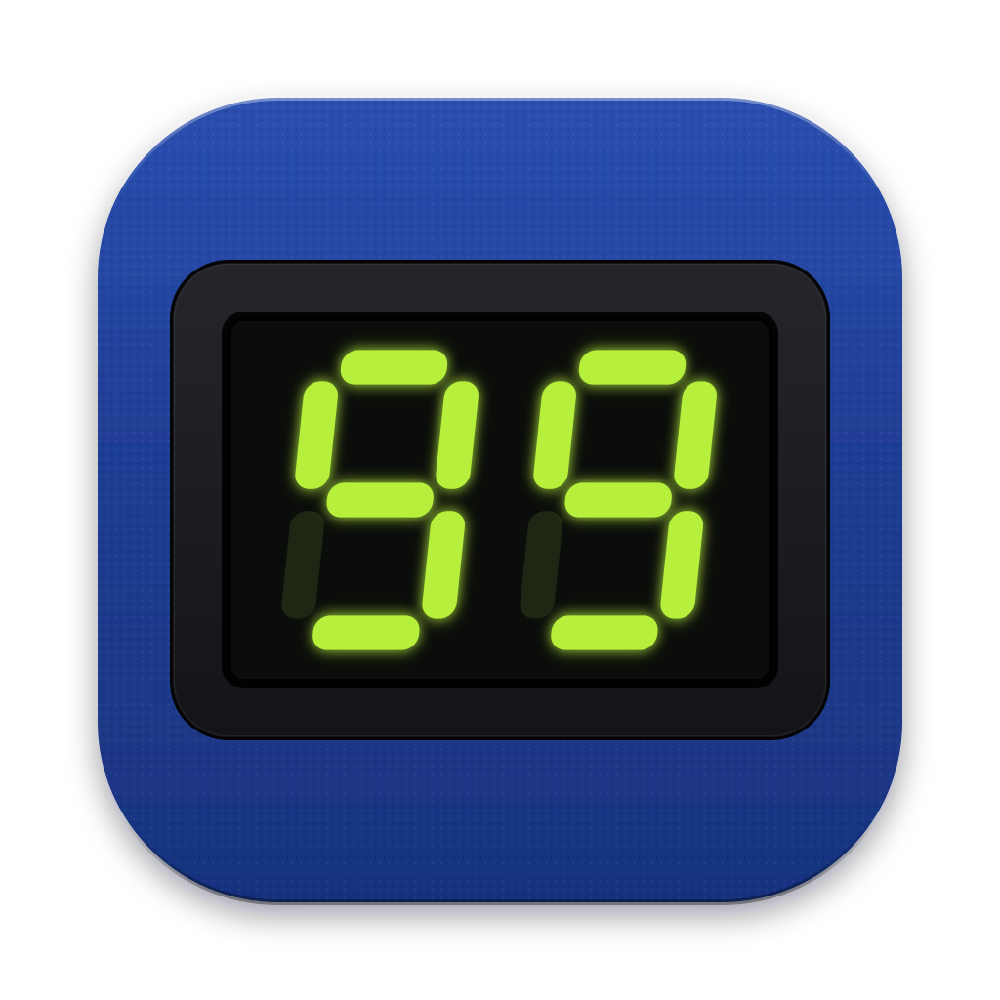

1. Display
La ventana del display marcando 99, los slots de la tarjeta. Dice lo que hace la app: gestionar los patches del pedal.

Las tres usan los materiales del sistema "Pedal" (chasis azul, panel negro, display verde, LEDs), sin el logo de Digitech. Cada una aparece en grande y en los tamaños donde más se ve: Dock, Finder y barra de pestañas.
En el Dock, junto a otras apps